Online Media
El Español
http://elespanol.com
El Español is one of the most awaited journalistic products ever in the country of Spain. Holds the country’s record in journalism crowdfunding and it's the house for the most prestigious passionate professionals working for online media communication
- 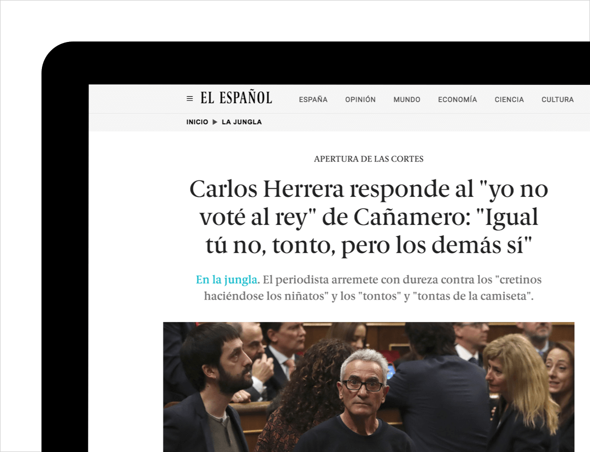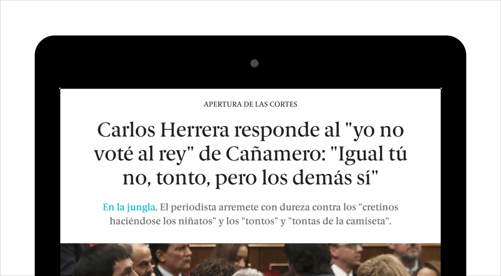
- 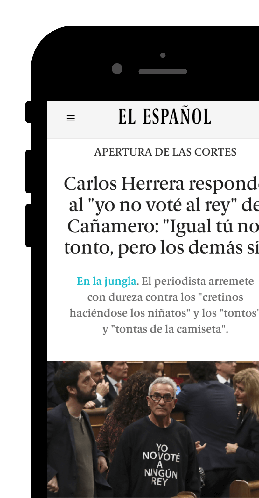
Design
In short, Design's mission is to always try to keep things simple, internaly and of course for the user, outside of the newsroom. Building our own UI Framework and our own Design System gives us more control when we need to build low or high fidelity prototypes. Maintaining a simple visual language with less distractions will give the user a really good experience. Design is being improved since the day 0.
- 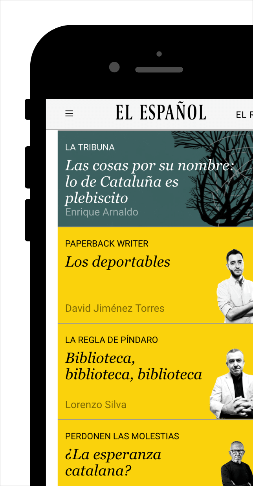
- 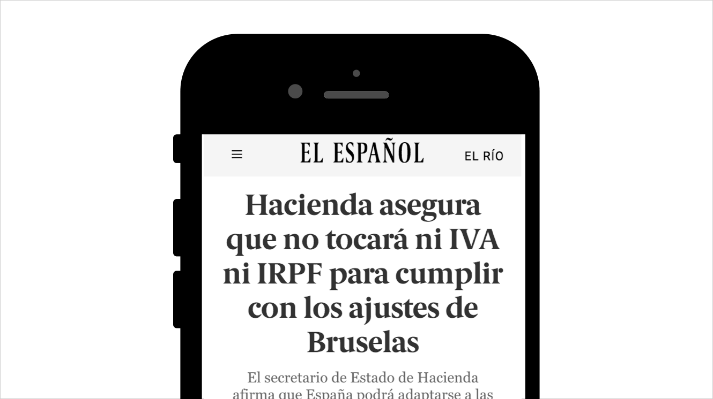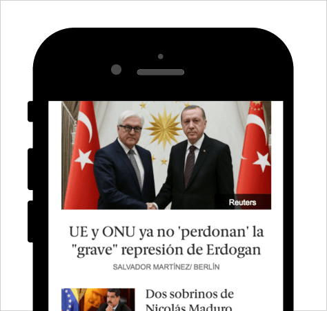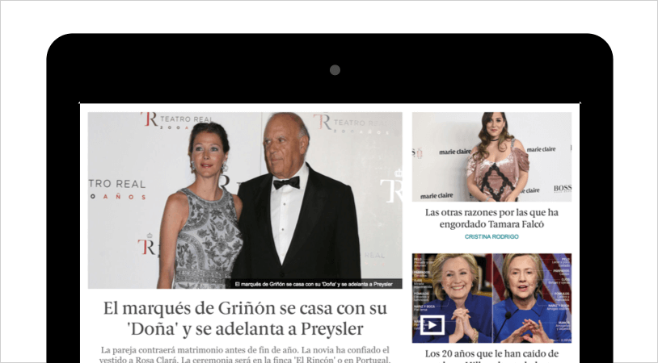
- 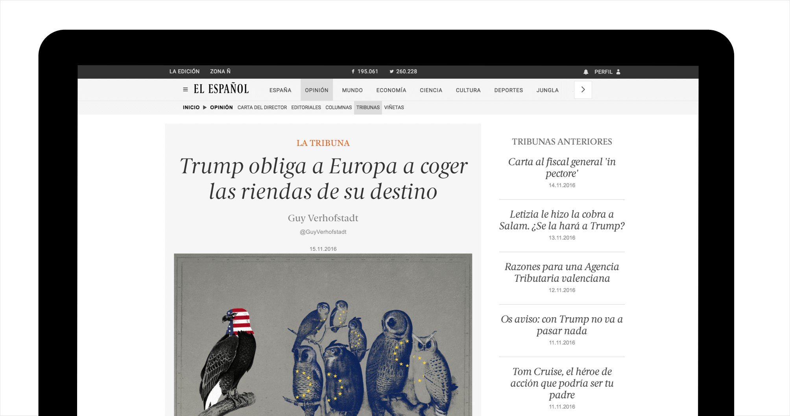
Tools
In order to achieve goals faster and more efficienttly, these are tools I use everyday. After joining El Español I gathered the courage to attempt allways better tools for working. For that reason most of our research as a Designer evolves finding the best tools in order to improve our workflow.
 Sketch
Sketch Invison
Invison- 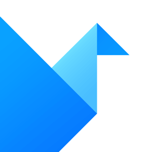Origami
- 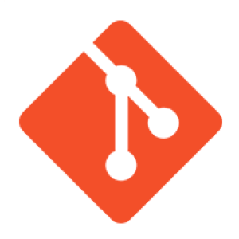Git
- 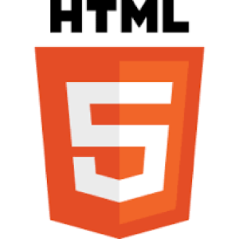HTML5
 Sass
Sass